#project_dir <- snakemake@config$project_dir
#project_dir <- '/project2/mstephens/ktayeb/logistic-susie-snakemake'
#knitr::opts_knit$set(root.dir = project_dir)
#print(getwd())Gene set enrichment, single gene set
library(yaml)
library(dplyr)
Attaching package: 'dplyr'The following objects are masked from 'package:stats':
filter, lagThe following objects are masked from 'package:base':
intersect, setdiff, setequal, unionlibrary(ggplot2)
library(tidyr)
library(glmnet)Loading required package: Matrix
Attaching package: 'Matrix'The following objects are masked from 'package:tidyr':
expand, pack, unpackLoaded glmnet 4.1-8source('workflow/scripts/plotting/plot_functions.R')
methods <- tibble::tribble(
~method, ~method_name, ~method_color,
'logistic_susie_l10', 'Logistic (L=10)', '#1a5a8f', # Darker blue
'logistic_susie_l1', 'Logistic (L=1)', '#4fa3d9', # Lighter blue
'susie_l10', 'Linear (L=10)', '#cc660a', # Darker orange
'susie_l10_fixed_residual_var', 'Linear Fixed Var', 'firebrick',
'varbvs', 'Varbvs', '#2ca02c' # Green
)
simulations <- yaml.load_file('config/gsea_sim/gsea_simulations_gobp10k.yml')
load_cs <- function(sim_group){
files <- list.files(
path = glue::glue("results/gsea/sim/{sim_group}/summaries"),
pattern = "_cs\\.rds$",
full.names = TRUE
)
print(files)
return(purrr::map_dfr(files, readRDS))
}
cs_res <- purrr::map(names(simulations), load_cs)[1] "results/gsea/sim/null/summaries/logistic_susie_l1_cs.rds"
[2] "results/gsea/sim/null/summaries/logistic_susie_l10_cs.rds"
[3] "results/gsea/sim/null/summaries/susie_l10_cs.rds"
[4] "results/gsea/sim/null/summaries/susie_l10_fixed_residual_var_cs.rds"
[1] "results/gsea/sim/single/summaries/logistic_susie_l1_cs.rds"
[2] "results/gsea/sim/single/summaries/logistic_susie_l10_cs.rds"
[3] "results/gsea/sim/single/summaries/susie_l10_cs.rds"
[4] "results/gsea/sim/single/summaries/susie_l10_fixed_residual_var_cs.rds"
[1] "results/gsea/sim/multiple/summaries/logistic_susie_l1_cs.rds"
[2] "results/gsea/sim/multiple/summaries/logistic_susie_l10_cs.rds"
[3] "results/gsea/sim/multiple/summaries/susie_l10_cs.rds"
[4] "results/gsea/sim/multiple/summaries/susie_l10_fixed_residual_var_cs.rds"
[1] "results/gsea/sim/nested/summaries/logistic_susie_l1_cs.rds"
[2] "results/gsea/sim/nested/summaries/logistic_susie_l10_cs.rds"
[3] "results/gsea/sim/nested/summaries/susie_l10_cs.rds"
[4] "results/gsea/sim/nested/summaries/susie_l10_fixed_residual_var_cs.rds"names(cs_res) <- names(simulations)
load_pips <- function(sim_group){
files <- list.files(
path = glue::glue("results/gsea/sim/{sim_group}/summaries"),
pattern = "_pip\\.rds$",
full.names = TRUE
)
print(files)
return(purrr::map_dfr(files, readRDS))
}
pip_res <- purrr::map(names(simulations), load_pips)[1] "results/gsea/sim/null/summaries/logistic_susie_l1_pip.rds"
[2] "results/gsea/sim/null/summaries/logistic_susie_l10_pip.rds"
[3] "results/gsea/sim/null/summaries/susie_l10_fixed_residual_var_pip.rds"
[4] "results/gsea/sim/null/summaries/susie_l10_pip.rds"
[5] "results/gsea/sim/null/summaries/varbvs_pip.rds"
[1] "results/gsea/sim/single/summaries/logistic_susie_l1_pip.rds"
[2] "results/gsea/sim/single/summaries/logistic_susie_l10_pip.rds"
[3] "results/gsea/sim/single/summaries/susie_l10_fixed_residual_var_pip.rds"
[4] "results/gsea/sim/single/summaries/susie_l10_pip.rds"
[5] "results/gsea/sim/single/summaries/varbvs_pip.rds"
[1] "results/gsea/sim/multiple/summaries/logistic_susie_l1_pip.rds"
[2] "results/gsea/sim/multiple/summaries/logistic_susie_l10_pip.rds"
[3] "results/gsea/sim/multiple/summaries/susie_l10_fixed_residual_var_pip.rds"
[4] "results/gsea/sim/multiple/summaries/susie_l10_pip.rds"
[5] "results/gsea/sim/multiple/summaries/varbvs_pip.rds"
[1] "results/gsea/sim/nested/summaries/logistic_susie_l1_pip.rds"
[2] "results/gsea/sim/nested/summaries/logistic_susie_l10_pip.rds"
[3] "results/gsea/sim/nested/summaries/susie_l10_fixed_residual_var_pip.rds"
[4] "results/gsea/sim/nested/summaries/susie_l10_pip.rds"
[5] "results/gsea/sim/nested/summaries/varbvs_pip.rds" names(pip_res) <- names(simulations)
load_lasso <- function(sim_group){
files = glue::glue("results/gsea/sim/{sim_group}/summaries/lasso_coverage.rds")
print(files)
return(purrr::map_dfr(files, readRDS))
}
lasso_res <- purrr::map(names(simulations), load_lasso)results/gsea/sim/null/summaries/lasso_coverage.rds
results/gsea/sim/single/summaries/lasso_coverage.rds
results/gsea/sim/multiple/summaries/lasso_coverage.rds
results/gsea/sim/nested/summaries/lasso_coverage.rdsnames(lasso_res) <- names(simulations)
compute_lasso_points <- function(res){
res %>%
#dplyr::select(sim_id, simulation_group, threshold, idx, incl_size, covered) %>%
dplyr::rowwise() %>%
dplyr::mutate(m = length(idx), covered=sum(covered)) %>%
dplyr::ungroup() %>%
dplyr::group_by(threshold) %>%
summarize(
n = sum(m),
tp = sum(covered),
fp = sum(incl_size) - tp,
power = tp / n,
fdp = fp / (tp + fp),
method='lasso',
simulation_group = simulation_group[1]
)
}
lasso_points <- purrr::map_dfr(lasso_res, compute_lasso_points)# takes an unnested tbl of pips (1 row, 1 pip) and produces the fdr plot
make_fdp_plot2 <- function(pips, ...){
pips %>%
unnest_longer(c(pip, causal)) %>%
ggplot(aes(pip, causal, color=method)) +
stat_fdp_power(geom='path', ...)
}Description of simulations
Null Simulations
Only linear SuSiE, and logistic SuSiE returns any false positive CSs
cs_res$null %>%
ggplot(aes(x=1/exp(lbf))) + geom_histogram() + facet_wrap(vars(method))`stat_bin()` using `bins = 30`. Pick better value with `binwidth`.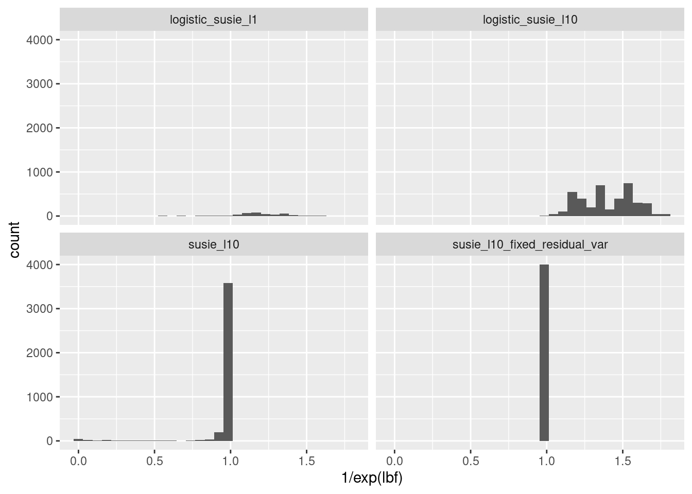
cs_res$null %>%
dplyr::group_by(method) %>%
dplyr::summarize(sum(lbf > 1))# A tibble: 4 × 2
method `sum(lbf > 1)`
<chr> <int>
1 logistic_susie_l1 0
2 logistic_susie_l10 0
3 susie_l10 120
4 susie_l10_fixed_residual_var 0cs_res$null %>%
dplyr::group_by(method, target) %>%
dplyr::arrange(desc(lbf)) %>%
dplyr::mutate(n = 1:n()) %>%
dplyr::ungroup() %>%
dplyr::filter(lbf > .1, target==0.9) %>%
ggplot(aes(x = lbf, y= n, color=method)) + geom_path() + theme_bw()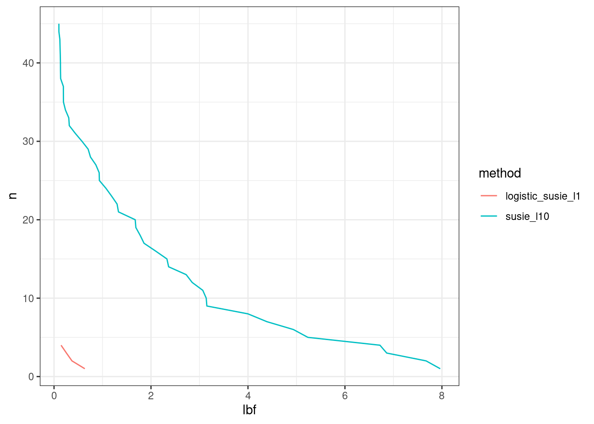
PIP-Calibration/Power
- Varbvs does not give calibrated PIPs
- Linear SuSiE, with an estimated residual variance, does not give calibrated PIPs.
- However, when you fix the residual variance at \(\sigma^2 = 1/4\) has reasonably well calibrated PIPs.
- Logistic SER and logistic SuSiE give well calibrated PIPs
Q: how can we quantify PIP calibration?
Logistic SuSiE offers better calibration in simulations scenarios representative of gene set analysis.
columns <- c('simulation_group', 'method', 'pip', 'causal')
pips <- dplyr::bind_rows(
dplyr::select(pip_res$single, all_of(columns)),
dplyr::select(pip_res$multiple, all_of(columns)),
dplyr::select(pip_res$nested, all_of(columns)))
make_pip_calibration_plot2 <- function(pips){
pips %>%
dplyr::filter(!purrr::map_lgl(pip, is.null)) %>%
dplyr::left_join(methods) %>%
make_pip_calibration_plot() +
labs(x = 'Posterior Inclusion Probability', y = 'Observed') +
xlim(0, 1) + ylim(0, 1)
}
pip_calibration_plot <- pips %>%
#slice_sample(n=1000) %>%
make_pip_calibration_plot2()Joining with `by = join_by(method)`pip_calibration_plot +
facet_grid(
rows=vars(simulation_group),
cols=vars(method_name)) +
coord_fixed(ratio=1)Warning: Removed 99 rows containing non-finite outside the scale range
(`stat_pip_cal()`).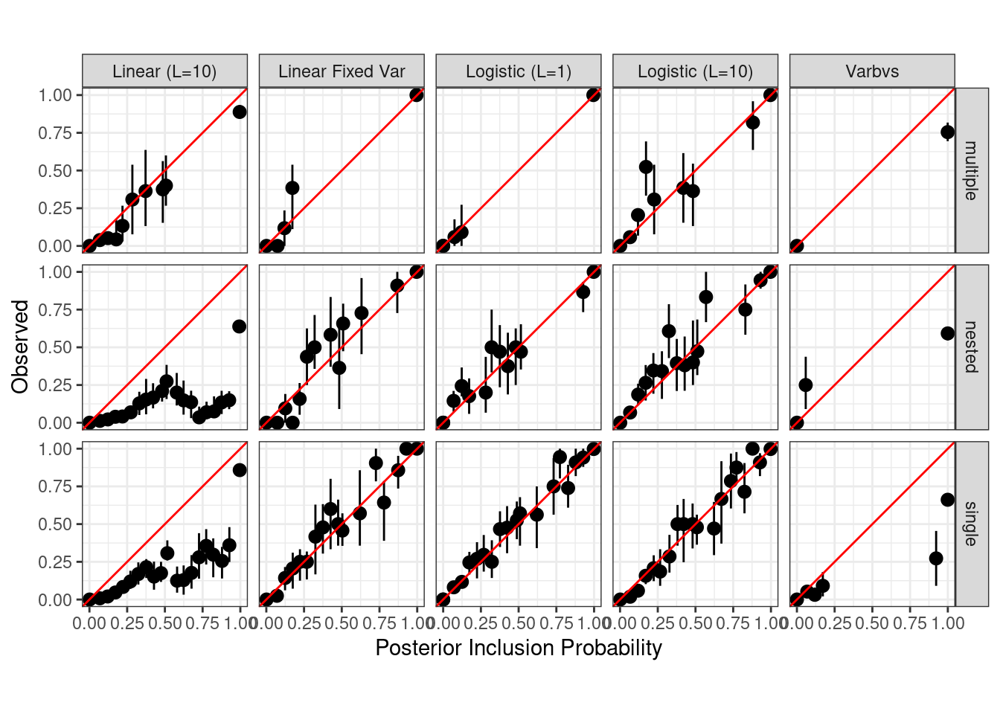
# lasso_data <- single_fits %>%
# dplyr::filter(purrr::map_lgl(fits, ~("lasso" %in% names(.x)))) %>%
# dplyr::rowwise() %>%
# dplyr::mutate(lasso_data = list(get_lasso_data(idx, fits))) %>%
# dplyr::select(-fits) %>%
# tidyr::unnest_longer(lasso_data, indices_to = 'level') %>%
# tidyr::unnest_wider(lasso_data)
# lasso_points <- lasso_data %>%
# dplyr::group_by(level) %>%
# summarize(
# n = n(),
# tp = sum(covered),
# fp = sum(size) - tp,
# power = tp / n,
# fdp = fp / (tp + fp),
# method='lasso'
# )
# TODO: add 0.95 and lasso points to the plot
make_pip_power_plot <- function(pips){
lasso_points2 <- lasso_points %>%
dplyr::filter(simulation_group != 'null')
pips %>%
dplyr::filter(!purrr::map_lgl(pip, is.null)) %>%
dplyr::left_join(methods) %>%
make_fdp_plot2() +
labs(x='False Discovery Proportion', y='Power') +
theme_bw() +
geom_point(
aes(x=fdp, y=power, shape=threshold, color=method), lasso_points2) +
labs(color = 'Method', shape = 'Lasso Penalty') +
guides(size = "none") +
scale_color_manual(
values = setNames(methods$method_color, methods$method),
labels = setNames(methods$method_name, methods$method)
)
}
pip_power_plot<- pips %>%
make_pip_power_plot()Joining with `by = join_by(method)`pip_power_plot +
facet_wrap(vars(simulation_group)) +
coord_fixed(1)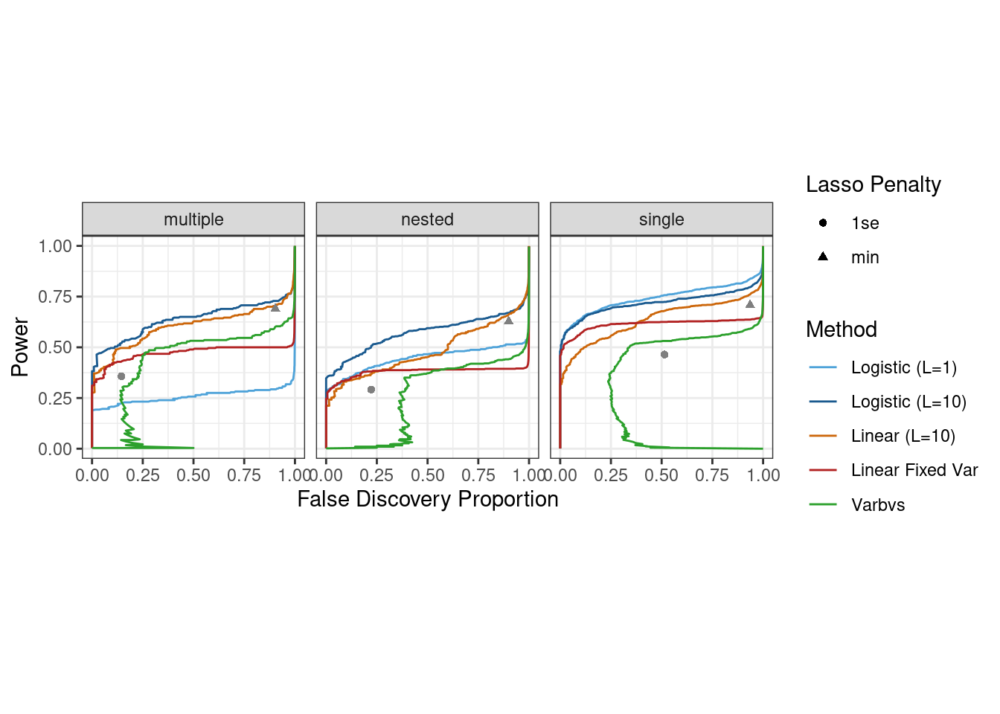
We assess the coverage of logistic SuSiE credible sets at various coverage levels. We retain components where \(\log \text{BF}_{\text{SER}} > 1\). Withouth this threshold many of the components are non-informative. Furthermore in simulations where we detect the effect in one component, the other components will be depleted for the variables selected. We find that logistic SuSiE credible sets obtain target coverage, and are often conservative. In contrast the linear SuSiE credible sets fail to obtain coverage at any level. For reference we also report coverage of the lasso solutions (did we estimate a non-zero effect for the enriched gene set?). Note that while 1se is a subset of min, we can only assess coverage where we report results. For many simulation 1se returns no non-zero effects, while min returns a set of effects which may not contain the correct variable. Thus we see a loss of coverage by diluting our discoveries with sets containing no causal variable.
CS Calibration/Power
# cs_data <- purrr::map_dfr(c(0.5, 0.8, 0.95, 0.99), ~make_cs_data(single_fits, .x))
# lasso_coverage <- lasso_data %>%
# dplyr::group_by(level) %>%
# dplyr::filter(size > 0, b != 0) %>%
# dplyr::rename(target = level) %>%
# dplyr::mutate(method='lasso')
LBF <- 1
make_cs_plots <- function(LBF){
cs_columns <- c('simulation_group', 'method', 'target', 'cs_size', 'covered', 'lbf')
cs <- dplyr::bind_rows(
dplyr::select(cs_res$single, all_of(cs_columns)),
dplyr::select(cs_res$multiple, all_of(cs_columns)),
dplyr::select(cs_res$nested, all_of(cs_columns)))
A <- cs %>%
dplyr::filter(lbf > LBF) %>%
dplyr::select(c(target, covered, method, simulation_group)) %>%
dplyr::left_join(methods) %>%
#dplyr::mutate(target = as.factor(target)) %>%
# dplyr::bind_rows(lasso_coverage) %>%
ggplot(aes(x=target, y=as.numeric(covered), color=method)) +
stat_bs_mean(position=position_dodge(0.01)) +
geom_abline(intercept=0, slope=1, color='red') +
theme_bw() +
labs(x = 'CS Target Coverage', y='Observed Coverage') +
scale_color_manual(
values = setNames(methods$method_color, methods$method),
labels = setNames(methods$method_name, methods$method)
) +
facet_wrap(vars(simulation_group)) +
coord_fixed(1)
cs_columns <- c('simulation_group', 'method', 'target', 'cs_size', 'covered', 'lbf', 'cs', 'idx', 'sim_id')
cs <- dplyr::bind_rows(
dplyr::select(cs_res$single, all_of(cs_columns)) %>% dplyr::rowwise() %>% mutate(idx = list(idx), cs = list(cs)),
dplyr::select(cs_res$multiple, all_of(cs_columns)),
dplyr::select(cs_res$nested, all_of(cs_columns)))
B <- cs %>%
dplyr::filter(lbf>LBF) %>%
dplyr::group_by(simulation_group, target, method, sim_id) %>%
dplyr::summarize(idx = list(idx[[1]]), all_cs = list(unlist(cs))) %>%
dplyr::rowwise() %>%
dplyr::mutate(m = length(idx), covered = sum(idx %in% all_cs)) %>%
dplyr::group_by(simulation_group, target, method) %>%
dplyr::summarize(tp = sum(covered), coverage = tp / sum(m)) %>%
dplyr::left_join(methods) %>%
ggplot(aes(x=target, y=coverage, color=method)) +
geom_point(position = position_dodge(width = 0.01)) + theme_bw() +
labs(x = 'CS Target Coverage', y='Power') +
scale_color_manual(
values = setNames(methods$method_color, methods$method),
labels = setNames(methods$method_name, methods$method)
) +
facet_wrap(vars(simulation_group)) +
coord_fixed(1)
C <- cs %>%
dplyr::filter(lbf > LBF, cs_size < 10) %>%
ggplot(aes(x=cs_size, fill=method, color=method)) + geom_histogram() + facet_grid(vars(factor(target)), vars(method)) + theme_bw()
return(list(coverage=A, power=B, size=C))
}
make_cs_plots(0)Joining with `by = join_by(method)`
`summarise()` has grouped output by 'simulation_group', 'target', 'method'. You
can override using the `.groups` argument.
`summarise()` has grouped output by 'simulation_group', 'target'. You can
override using the `.groups` argument.
Joining with `by = join_by(method)`$coverage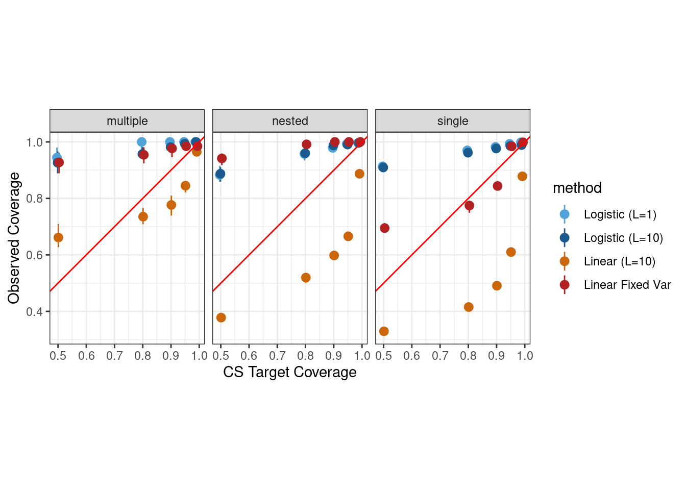
[1] "x" "y" "colour" "PANEL" "group"
[1] "x" "y" "colour" "PANEL" "group"
[1] "x" "y" "colour" "PANEL" "group"
[1] "x" "y" "colour" "PANEL" "group"
[1] "x" "y" "colour" "PANEL" "group"
[1] "x" "y" "colour" "PANEL" "group"
[1] "x" "y" "colour" "PANEL" "group"
[1] "x" "y" "colour" "PANEL" "group"
[1] "x" "y" "colour" "PANEL" "group"
[1] "x" "y" "colour" "PANEL" "group"
[1] "x" "y" "colour" "PANEL" "group"
[1] "x" "y" "colour" "PANEL" "group"
$power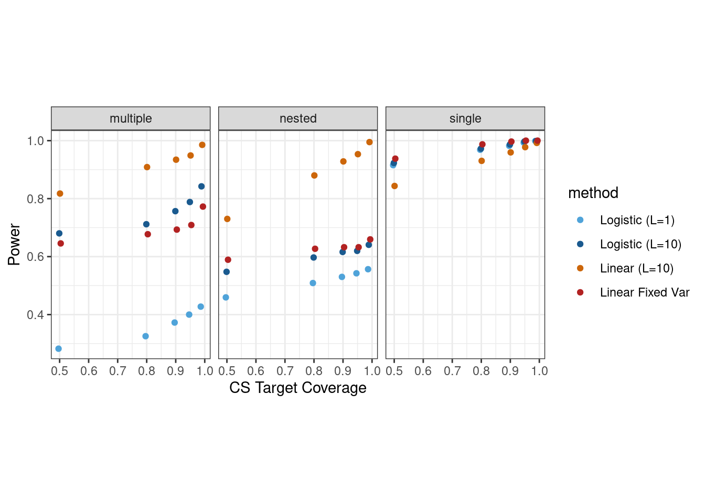
$size`stat_bin()` using `bins = 30`. Pick better value with `binwidth`.make_cs_plots(1)Joining with `by = join_by(method)`
`summarise()` has grouped output by 'simulation_group', 'target', 'method'. You
can override using the `.groups` argument.
`summarise()` has grouped output by 'simulation_group', 'target'. You can
override using the `.groups` argument.
Joining with `by = join_by(method)`$coverage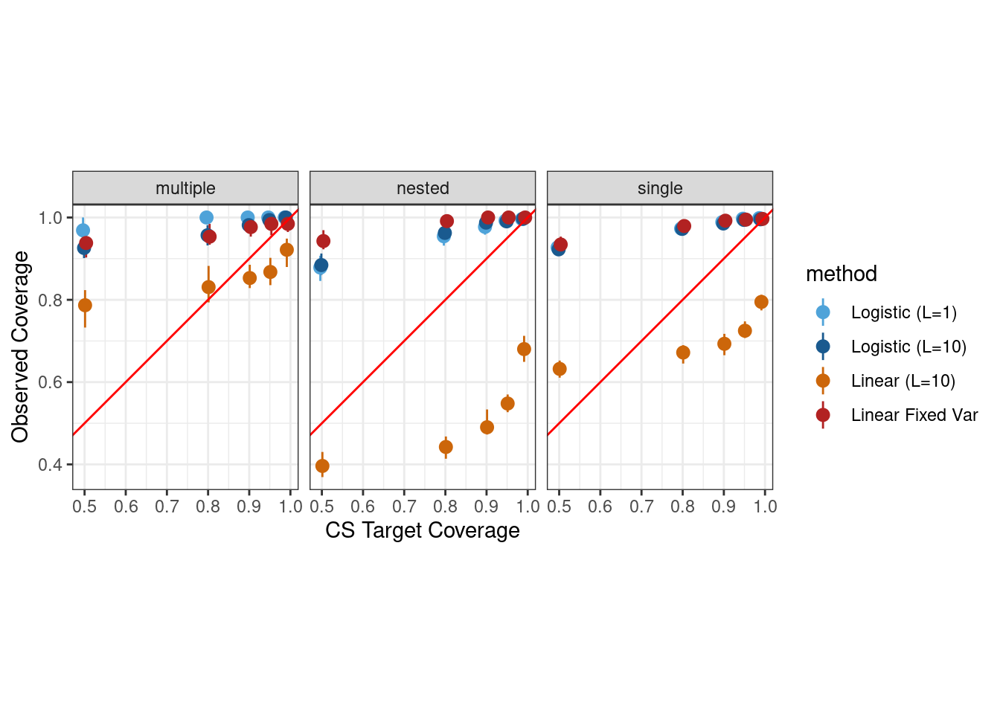
[1] "x" "y" "colour" "PANEL" "group"
[1] "x" "y" "colour" "PANEL" "group"
[1] "x" "y" "colour" "PANEL" "group"
[1] "x" "y" "colour" "PANEL" "group"
[1] "x" "y" "colour" "PANEL" "group"
[1] "x" "y" "colour" "PANEL" "group"
[1] "x" "y" "colour" "PANEL" "group"
[1] "x" "y" "colour" "PANEL" "group"
[1] "x" "y" "colour" "PANEL" "group"
[1] "x" "y" "colour" "PANEL" "group"
[1] "x" "y" "colour" "PANEL" "group"
[1] "x" "y" "colour" "PANEL" "group"
$power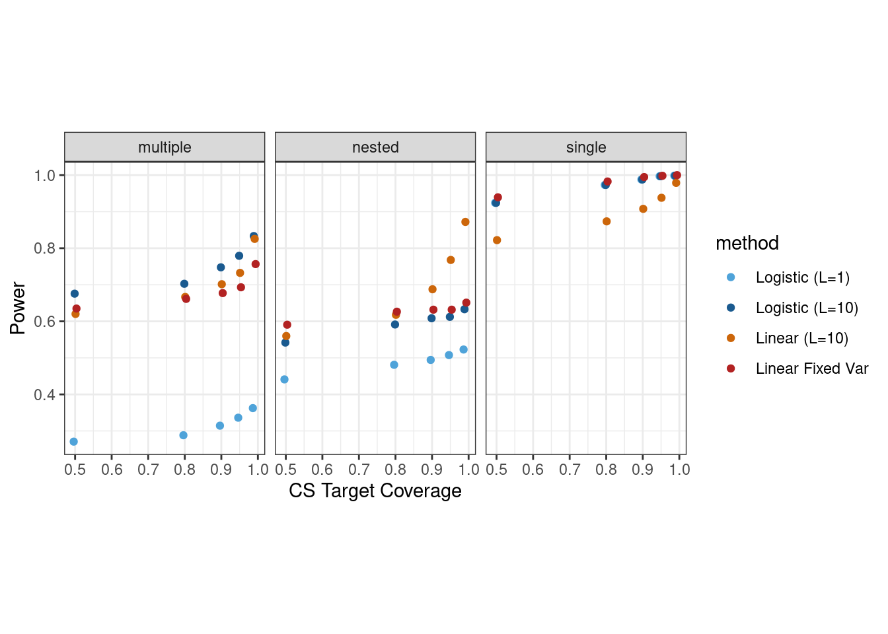
$size`stat_bin()` using `bins = 30`. Pick better value with `binwidth`.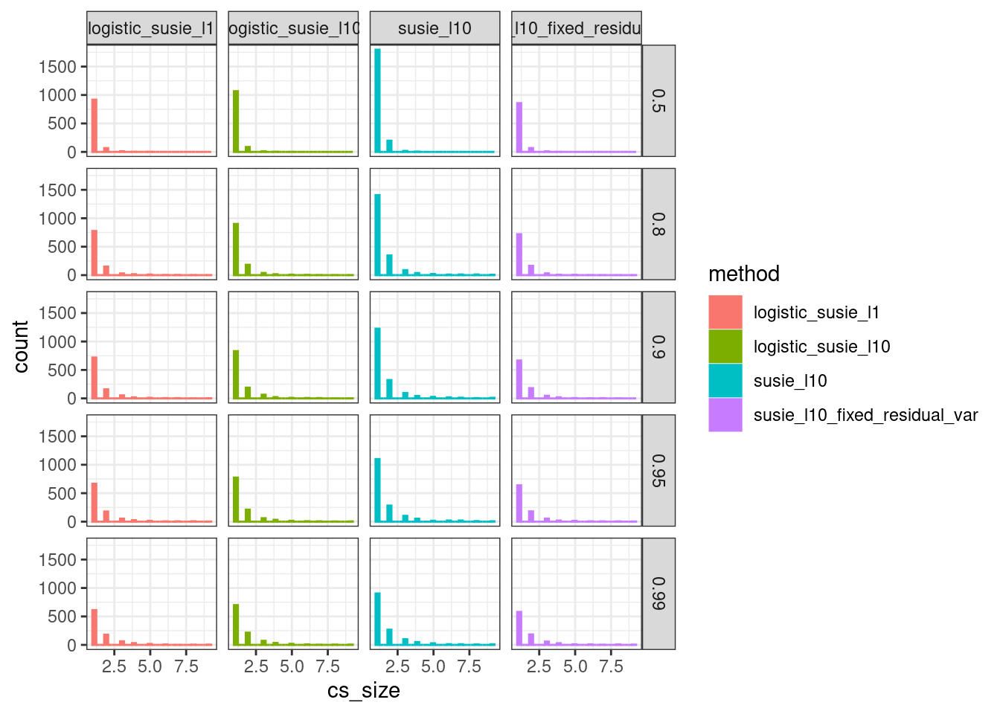
make_cs_plots(3)Joining with `by = join_by(method)`
`summarise()` has grouped output by 'simulation_group', 'target', 'method'. You
can override using the `.groups` argument.
`summarise()` has grouped output by 'simulation_group', 'target'. You can
override using the `.groups` argument.
Joining with `by = join_by(method)`$coverage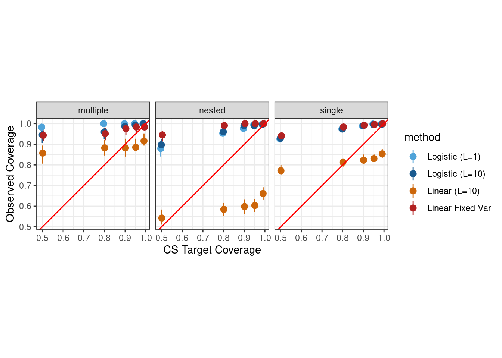
[1] "x" "y" "colour" "PANEL" "group"
[1] "x" "y" "colour" "PANEL" "group"
[1] "x" "y" "colour" "PANEL" "group"
[1] "x" "y" "colour" "PANEL" "group"
[1] "x" "y" "colour" "PANEL" "group"
[1] "x" "y" "colour" "PANEL" "group"
[1] "x" "y" "colour" "PANEL" "group"
[1] "x" "y" "colour" "PANEL" "group"
[1] "x" "y" "colour" "PANEL" "group"
[1] "x" "y" "colour" "PANEL" "group"
[1] "x" "y" "colour" "PANEL" "group"
[1] "x" "y" "colour" "PANEL" "group"
$power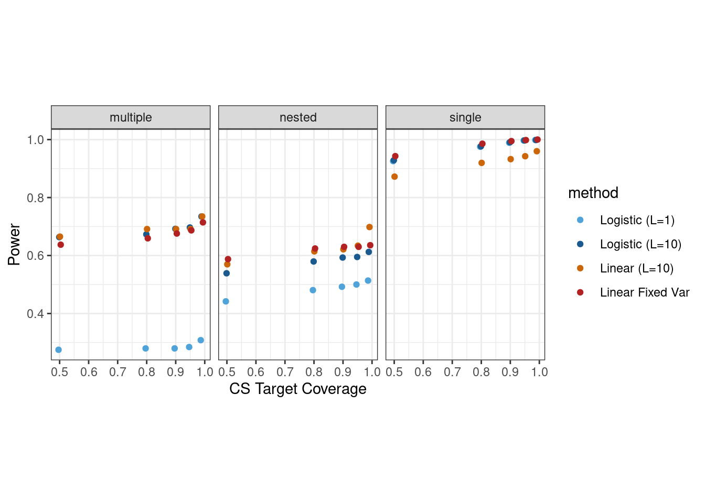
$size`stat_bin()` using `bins = 30`. Pick better value with `binwidth`.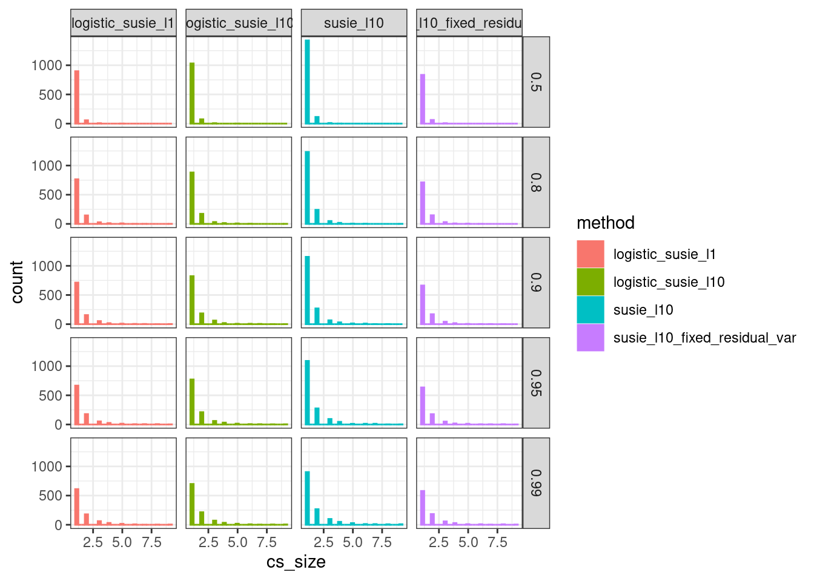
Linear SuSiE (estimate prior variance): the credible sets are not calibrated. Although the 95% credible sets have high power, they do not achieve nominal coverage rates.
Linear SuSiE (fixed residual variance): in the multiple and nested enrichment scenarios linear SuSiE with fixed residual variance obtains coverage. In this case, logistic SuSiE has higher power in the multiple enrichment scenario, while linear SuSiE has slightly higher power in the nested simulation scenario. While both methods have high power in the single enrichment scenario, linear SuSiE CSs do not always obtain nominal coverage levels.
Interestingly, logisitc SuSiE has very conservative credible sets. I suspect that has to do with the fact that many of the CSs are singletons?
It is necessary to threshold CSs on some criteria, since we don’t expect all 10 credible sets to be interesting. We threshold on three values to the \(\log \text{BF}_{\text{SER}} = 0, 1, 3\).